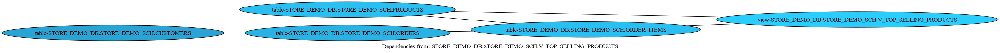
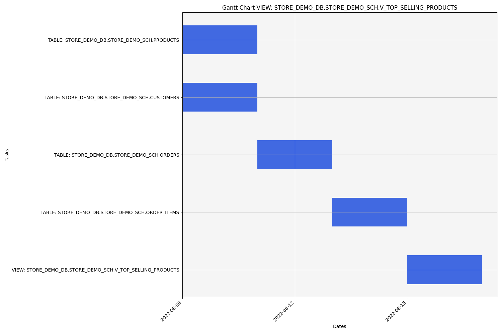

Overall analysis for STORE_DEMO_DB.STORE_DEMO_SCH.V_TOP_SELLING_PRODUCTS
This report shows the corresponding analysis for STORE_DEMO_DB.STORE_DEMO_SCH.V_TOP_SELLING_PRODUCTS:
1. The view is named V_TOP_SELLING_PRODUCTS and is created in the store_demo_db.store_demo_sch schema.
2. The view is based on a SELECT statement that joins two tables: ORDER_ITEMS and PRODUCTS.
3. The join is performed on the PRODUCT_ID column, which is common to both tables.
4. The view selects three columns: PRODUCT_ID, PRODUCT_NAME, and TOTAL_QUANTITY, which is calculated using the SUM aggregation function on the QUANTITY column of the ORDER_ITEMS table.
5. The view groups the results by PRODUCT_ID and PRODUCT_NAME.
6. The view orders the results in descending order based on the TOTAL_QUANTITY column.
Overall Complexity:
Dag Diagram

Diagram that shows dependencies required to migrate the object: STORE_DEMO_DB.STORE_DEMO_SCH.V_TOP_SELLING_PRODUCTS
Each hierarchy layer of sub-dependencies is represented by color degradation according to the previous root node.
Leaf nodes must be migrated first.
Nodes with dark red outlines aren't yet into Snowflake database.
Gantt Diagram

Diagram that shows the migration workflow to build the object: STORE_DEMO_DB.STORE_DEMO_SCH.V_TOP_SELLING_PRODUCTS
Graph X-axis is represented by dates, with the corresponding start date up to the final date approximation of migration time required.
Graph Y-axis is represented by all objects required to migrate the specified object.
Red bars aren't yet into the Snowflake database.
The workflow represents the migration process, parallelizing each sub-dependencies until the principal object and the time required to migrate.
General Dashboard
Dashboard with the general analysis of all objects contained into Snowflake database.